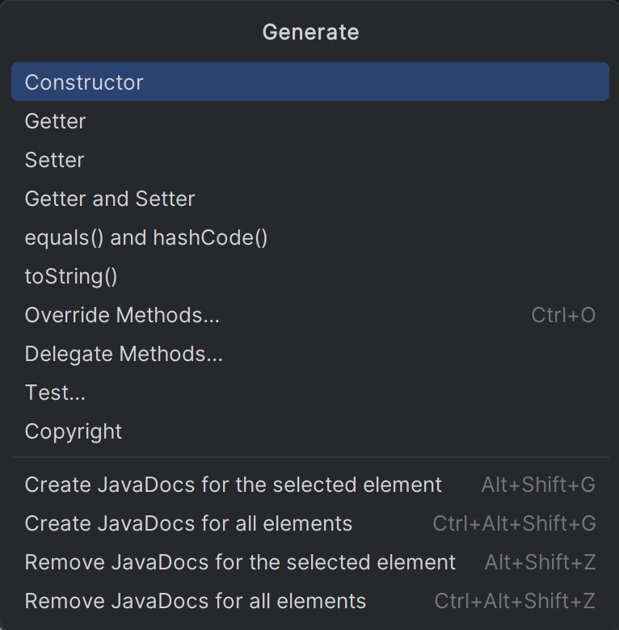
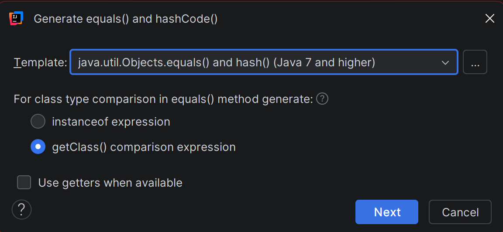

Configuring Code Templates
Overview
IntelliJ IDEA can automatically generate common Java methods for you —
equals(), hashCode(), and toString() — so you do not have to write
them from scratch every time. It does this using templates that define
what the generated code should look like.
The default templates do not match COMP 2522 style requirements, so this section walks you through replacing them with course-compliant versions. Once set up, every time you generate these methods IntelliJ will produce code that already follows your instructor's standards.
This section also covers updating the Javadoc plugin's
class comment template so that generated class headers automatically include
the @author and @version tags your instructor requires.
Note
It is okay if some of the template code below looks unfamiliar — you are not expected to understand every line of it yet. The goal right now is to get your environment set up correctly so these tools work for you throughout the term. If you encounter terms you don't recognize, make a note and ask your instructor.
Note
These templates are stored globally in your IDE settings and apply to every project you open. You only need to configure them once.
Note
Template configuration is accessed through the Generate menu inside
an open Java class file. Before starting, open any .java file in
your project — any existing class works fine.
Configuring the toString Template
The toString() method produces a readable text description of an object —
useful for debugging and logging. The template below checks what fields are
present in your class and builds them into a consistent output format,
while also checking for a superclass and including
its information if one exists.
-
Open any Java class file in your project.
-
Press Alt+Ins to open the Generate menu.

-
Select toString().
At this point, the Generate toString() dialog opens showing your class fields.
-
Click the ... button beside the Template dropdown in the top-right area of the dialog.
-
Click the Templates tab.
-
Select the existing template and click Edit, or click Add to create a new one named
COMP 2522 toString. -
Replace the entire template contents with the following:
public java.lang.String toString() { final java.lang.StringBuilder sb; sb = new java.lang.StringBuilder("$classname{"); #if ($parentClassName != "Object") sb.append("super=").append(super.toString()); #set ($i = 1) #else #set ($i = 0) #end #foreach ($member in $members) #if ($i == 0) sb.append("## #else sb.append(", ## #end #if ($member.string) $member.name='")## #else $member.name=")## #end #if ($member.primitiveArray || $member.objectArray) .append(java.util.Arrays.toString($member.name)); #elseif ($member.string) .append($member.accessor).append('\''); #else .append($member.accessor); #end #set ($i = $i + 1) #end sb.append('}'); return sb.toString(); }The animation below shows the full flow from opening the dialog to saving the completed template:

-
Click OK to save the template.
-
Back in the toString() Settings dialog, select your updated template from the Template dropdown to make it active.
-
Click OK to close the settings dialog, then OK again in the Generate toString() dialog to generate the method and verify the output.
Tip
The same template system works for anything in the Generate menu —
if you find yourself writing the same code structure repeatedly in
this course, you can save it as a template the same way. You can
also look into Live Templates (File > Settings > Editor >
Live Templates) which let you type a short abbreviation like
tostr and have IntelliJ expand it into the full method body
instantly, without opening the Generate menu at all.
Configuring the equals and hashCode Templates
The equals() method checks whether two objects are meaningfully the same.
The template below looks at each field in your class and compares them one
by one, while also checking that the two objects are exactly the same type
before comparing anything. The hashCode() method works alongside equals()
— Java requires that if two objects are equal, they must produce the same
hash code, so these are always configured together.
-
Press Alt+Ins to open the Generate menu again.
-
Select equals() and hashCode().

At this point, the Generate equals() and hashCode() wizard opens.
-
Click the ... button beside the Template dropdown.
-
Select the existing equals template and click Edit, or click Add to create a new one named
COMP 2522 equals. -
Replace the entire equals template contents with the following:
#parse("equalsHelper.vm") public boolean equals(## #if ($settings.generateFinalParameters) final ## #end Object $paramName){ #addEqualsPrologue() #addClassInstance() return ## #set($i = 0) #if($superHasEquals) super.equals($paramName) ## #set($i = 1) #end #foreach($field in $fields) #if ($i > 0) && ## #end #set($i = $i + 1) #if ($field.primitive) #if ($field.double || $field.float) #addDoubleFieldComparisonConditionDirect($field) ## #else #addPrimitiveFieldComparisonConditionDirect($field) ## #end #elseif ($field.enum) #addPrimitiveFieldComparisonConditionDirect($field) ## #elseif ($field.array) java.util.Objects.deepEquals($field.accessor, ${classInstanceName}.$field.accessor)## #else java.util.Objects.equals($field.accessor, ${classInstanceName}.$field.accessor)## #end #end ; } -
Click OK to save the equals template.
-
Select the hashCode template entry and click Edit, or click Add to create a new one named
COMP 2522 hashCode. -
Replace the entire hashCode template contents with the following:
public int hashCode() { #if (!$superHasHashCode && $fields.size()==1) #if (!$fields[0].array) return java.util.Objects.hashCode($fields[0].accessor); #elseif ($fields[0].nestedArray) return java.util.Arrays.deepHashCode($fields[0].accessor); #else return java.util.Arrays.hashCode($fields[0].accessor); #end #else return java.util.Objects.hash(## #set($i = 0) #if($superHasHashCode) super.hashCode() ## #set($i = 1) #end #foreach($field in $fields) #if ($i > 0) , ## #end #if(!$field.array) $field.accessor ## #elseif ($field.nestedArray) java.util.Arrays.deepHashCode($field.accessor)## #else java.util.Arrays.hashCode($field.accessor)## #end #set($i = $i + 1) #end ); #end } -
Click OK to save the hashCode template.
-
Back in the equals() and hashCode() wizard, select your updated templates from the dropdowns and click Next to select the fields to include.
-
Click Finish to generate the methods.
Configuring the Javadoc Class Template
The JavaDoc plugin's default class comment template does not include
@author or @version tags. Updating it here means every class comment
you generate will already have those tags waiting for you to fill in —
no more forgetting them before submission.
Unlike the toString and equals templates, this one is configured
through Settings rather than the Generate menu.
-
Open File > Settings (Ctrl+Alt+S).
-
Navigate to Tools > JavaDoc in the left panel.
-
Click the Templates tab.
-
Select Class level from the template list.
-
Replace all four template fields with the following:
-
Click Apply then OK.
At this point, any class-level Javadoc generated by the plugin will include the
@authorand@versiontags ready for you to fill in.
Conclusion
Your code generation templates are now configured for COMP 2522. From here,
using Generate (Alt+Ins) on any class will produce compliant
equals(), hashCode(), toString(), and Javadoc comments automatically.
This is the last configuration step in the guide. Your environment is now fully set up for CST coursework — the work you have done here will save you time and help you avoid style penalties on every assignment this term.